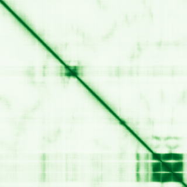

type: protein-evaluation gene: "CEP68" date: 2026-06-01 tags: [protein-scout, nucleoplasm, evaluation] status: scored ---
CEP68 核蛋白评估报告
1. 基本信息
| 项目 | 内容 |
|---|---|
| 基因名 | CEP68 |
| 蛋白全名 | Centrosomal protein of 68 kDa |
| 蛋白大小 | 757 aa / 68 kDa |
| UniProt ID | Q76N32 |
2. 评分总览
| 维度 | 得分 | 权重 | 加权 | 摘要 |
|---|---|---|---|---|
| 核定位特异性 | 6/10 | ×4 | 24.0 | GO nucleoplasm IDA:HPA + centrosome IDA; UniProt 仅 centrosome |
| 蛋白大小 | 5/10 | ×1 | 5.0 | 757 aa |
| 研究新颖性 | 8/10 | ×5 | 40.0 | Strict=22 |
| 三维结构 | 4/10 | ×3 | 12.0 | pLDDT 48.7 (low) |
| 调控结构域 | 5/10 | ×2 | 10.0 | Centrosome/centriolar satellite |
| PPI 网络 | 5/10 | ×3 | 15.0 | STRING moderate |
| 加权总分 | 106/180** | |||
| 互证加分 | +1.0 | GO nucleoplasm IDA:HPA | ||
| 归一化总分 (÷1.83) | 57.9/100** |
PubMed strict: 22
3. 核定位证据
| 来源 | 定位 | 可信度 |
|---|---|---|
| UniProt | Centrosome (ECO:0000269) | Experimental |
| GO-CC | centrosome IDA; centriolar satellite IDA:HPA; nucleoplasm IDA:HPA | Direct assay |
HPA IF 状态: HPA IF 原图未可靠获取（HPA检索页无可用的subcellular IF原图）。核定位基于HPA localization/reliability + UniProt + GO-CC。 — HPA 暂无 IF 原图数据。GO-CC nucleoplasm IDA:HPA 提供 HPA 级核定位支持。

PAE 状态: 已获取。pLDDT 48.7 (mean, very low), 63.3% <50。蛋白高度无序。
4. PPI 网络
| Partner | Source | Score/Evidence |
|---|---|---|
| CNTRL | STRING | 0.995 (exp 0.575) |
| CEP250 | STRING | 0.990 |
| CEP350 | STRING | 0.952 |
| PCNT | STRING | 0.929 |
| CNTRL | IntAct | two hybrid |
IntAct 6 条。centrosome linker 网络。
5. 总体评价
CEP68 是 centrosome/centriolar satellite 蛋白。GO nucleoplasm IDA:HPA 提供核质证据。pLDDT 极低提示高度无序。低置信度 nucleoplasm。
PAE 图像暂无数据（未生成本地图片或未可靠获取），结构判断基于 AlphaFold pLDDT 统计。
关键文献
| PMID | 标题 |
|---|---|
| 40416952 | A cross-tissue transcriptome-wide association study identifies novel susceptibility genes for atrial |
| 25679029 | Solving the centriole disengagement puzzle. |
| 18042621 | Cep68 and Cep215 (Cdk5rap2) are required for centrosome cohesion. |
| 21072201 | Genome-wide and follow-up studies identify CEP68 gene variants associated with risk of aspirin-intol |
| 25704143 | Cep68 can be regulated by Nek2 and SCF complex. |